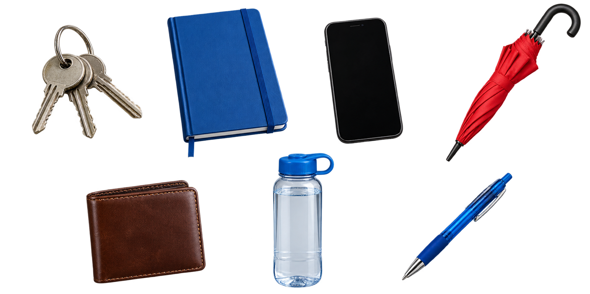

Vocabulary practice · Unit 2
The table and the clock
Whose things are on the table?2A
1Write Ida’s two things, Max’s thing and Luz’s thing.

Ida: My two things are blue. I use them to write.
Max: My thing is for the rain.
Luz: My thing is for money.
Ida:
Max:
Luz:
2Look for ten seconds, then cover the picture. Name the other three things. What is missing for music?
For music: h.
Find the two time mistakes2B
3Two written times are wrong. Circle them and write the correct times in words.
4Choose a clock secretly. Say its time; your partner writes the letter. Change roles.
Alone? Cover the captions. Write all four clock times in words.